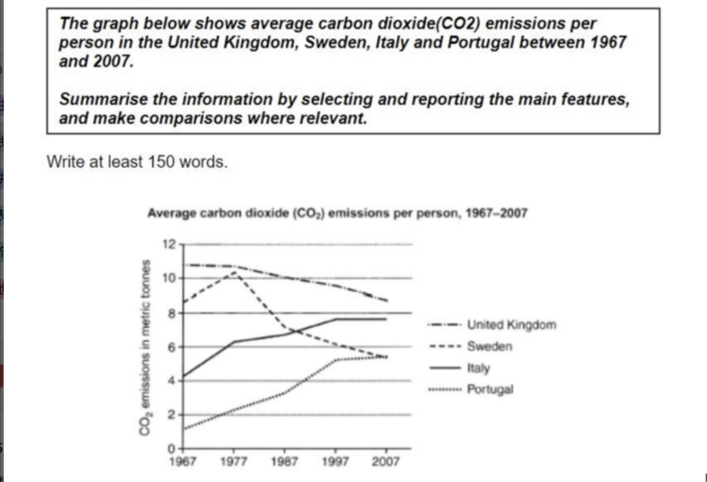

CO2 Emissions per Person (1967–2007)
动态类 折线图 修改日期：2026-03-16
| 评分维度 | 修改前 | 修改后 | 变化 | 说明 |
|---|---|---|---|---|
| Task Achievement (TA) | 7.0 | 7.0 | +0.0 | 内容未变，保持原有的准确性和完整性。 |
| Coherence and Cohesion (CC) | 7.0 | 7.0 | +0.0 | 衔接和段落结构未做大改，保持良好水平。 |
| Lexical Resource (LR) | 6.0 | 7.0 | +1.0 | 通过 13 处词汇升级，使用了 illustrate, approximately, exhibited 等高级词汇。 |
| Grammatical Range and Accuracy (GRA) | 7.0 | 7.0 | +0.0 | 语法本身无误，引入了 "with + 名词 + 分词" 结构。 |
题目原文：The graph below shows average carbon dioxide (CO2) emissions per person in the United Kingdom, Sweden, Italy and Portugal between 1967 and 2007.
Summarise the information by selecting and reporting the main features, and make comparisons where relevant.

The line graph shows the average amount of carbon dioxide emissions per person in the United Kingdom, Sweden, Italy and Portugal from 1967 to 2007.
Overall, the UK produced the highest amount of CO2 during the whole period, although its figure gradually decreased. Sweden also showed a downward trend after reaching a peak in 1977. By contrast, Italy and Portugal experienced steady increases, and Italy became the second highest country at the end.
In 1967, the UK had the highest emissions, at about 11 metric tonnes per person. Sweden was lower, at around 8.5 tonnes, while Italy and Portugal were much lower at about 4 tonnes and 1 tonne respectively. Ten years later, Sweden rose to just over 10 tonnes, which was its highest point, while the UK remained slightly above 10 tonnes.
After 1977, Sweden's emissions fell sharply to around 7 tonnes in 1987 and continued to decline to about 5.5 tonnes in 2007. The UK also dropped, but more slowly, finishing at about 8.5 tonnes. On the other hand, Italy increased steadily from 4 to nearly 8 tonnes over the period. Portugal also went up significantly, from about 1 tonne to just above 5 tonnes in 2007.
开头段（Introduction / Paraphrase）
概述段（Overview）
主体段一（Body Paragraph 1）— 1967年起始数据与1977年变化
主体段二（Body Paragraph 2）— 1977年后至2007年趋势
内容与结构建议
修改统计
本次修改以词汇提升为主，共进行 13 处词汇升级和 1 处语法微调。修改策略是在完全保留用户原文结构和段落逻辑的基础上，将基础词汇替换为 Task 1 高分常用的数据描述词汇。用户原文的结构、数据准确性和逻辑连贯性已达到 Band 7 水平，本次修改主要弥补了词汇层面的短板，使 LR 从 6 分提升至 7 分。
The line graph illustrates the average carbon dioxide (CO2) emitted per person in four European countries — the United Kingdom, Sweden, Italy, and Portugal — between 1967 and 2007.
Overall, the UK produced the highest amount of CO2 throughout the entire period, although its figure declined gradually. Sweden also exhibited a downward trend after reaching a peak in 1977. By contrast, Italy and Portugal experienced steady increases, with Italy becoming the second largest emitter by the end of the period.
In 1967, the UK had the highest emissions, at approximately 11 metric tonnes per person. Sweden was lower, at around 8.5 tonnes, while Italy and Portugal recorded significantly lower figures, at about 4 tonnes and 1 tonne respectively. A decade later, Sweden rose to just over 10 tonnes, reaching its peak, while the UK remained slightly above 10 tonnes.
After 1977, Sweden's emissions fell sharply to around 7 tonnes in 1987 and continued to decline to about 5.5 tonnes by 2007. The UK also dropped, but more gradually, finishing at about 8.5 tonnes. On the other hand, Italy increased steadily from 4 to nearly 8 tonnes over the 40-year period. Portugal also rose considerably, from about 1 tonne to just above 5 tonnes in 2007.